Industrie & Technologie
Maschinenbau, Photonik, Metall, Lufttechnik, Software und industrielle Dienstleistungen.
Kunden & Auszeichnungen
Seit 1996 arbeitet neckarfreunde mit mittelständischen Unternehmen, Familienunternehmen, Institutionen und Organisationen. Manche Mandate dauern einen Tag, andere laufen über Jahre.
Was Kunden verbindet
Die Kunden von neckarfreunde kommen aus unterschiedlichen Märkten. Gemeinsam ist ihnen, dass wichtige Entscheidungen anstehen und die bisherigen Antworten nicht mehr reichen.
Maschinenbau, Photonik, Metall, Lufttechnik, Software und industrielle Dienstleistungen.
Nachfolge, Wachstum, neue Marktphasen, Positionierung und Professionalisierung.
Strategie, Sichtbarkeit, Mitgliederkommunikation und Zukunftsprogramme.
Markenarchitektur, Investorenstory, Vertriebslogik und Unternehmensentwicklung.
Institutionen, Ministerien, Bildungsträger und soziale Organisationen.
Kanzleien, Coaching, Eventtechnik, Touristik und wissensbasierte Unternehmen.
Unternehmen, Institutionen und Organisationen
Ein Auszug aus Unternehmen, Institutionen und Organisationen, für die wir im Laufe unserer Geschichte tätig waren. Darunter langjährige, abgeschlossene und aktuelle Mandate.
Auswahl aus früheren und aktuellen Kundenbeziehungen. Einzelne Mandate werden aus Gründen der Vertraulichkeit nicht näher erläutert.
Auszeichnungen
Nationale und internationale Auszeichnungen würdigen die Arbeit von neckarfreunde für Unternehmen und Organisationen. Darunter der German Brand Award, der German Design Award und der Deutsche Agenturpreis.




Bewertungen
Bewertungen ersetzen kein persönliches Gespräch. Sie zeigen aber, ob das Versprochene in der Zusammenarbeit auch erlebt wird.
„Ihsan spricht eine klare und direkte Sprache. Seine Verbindlichkeit und Beständigkeit waren immer spürbar. Auf Ihsan kann man zählen.“
„Er nimmt sich Zeit für persönliche Gespräche, baut eine echte Verbindung auf und gewinnt ein tiefes Verständnis für die Ziele seiner Kunden.“
Wie Vertrauen entsteht
Konzepte für die Schublade gibt es bei neckarfreunde nicht. Strategie, Marke und Angebot werden so klar, dass sie im Alltag funktionieren.
Ihsan Khalil sagt, was er sieht, auch wenn die Antwort unbequem ist.
Absprachen bleiben Absprachen. Entscheidungen werden nachgehalten.
Nach der Präsentation ist die Arbeit nicht vorbei. Ihsan Khalil bleibt an Ihrer Seite, bis die Umsetzung läuft.